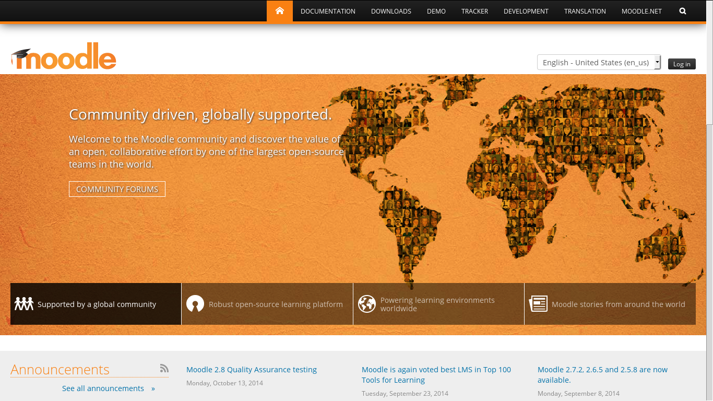

O Moodle é um Ambiente Virtual de Ensino Aprendizagem (AVEA), também conhecido como Course Management System ou Learning Management System.
O Moodle é um software livre, escrito principalmente em PHP e JavaScript. O projeto começou como trabalho de doutorado de Martin Dougiamas (ainda líder do projeto) e em 2012 completou sua primeria década de existência.
Atualmente a maior parte do desenvolvimento e da gerência do projeto é feita no Moodle HQ, sede da Moodle Pty Ltd., em Perth, na Australia. Além dos mais de 50 funcionários no Moodle HQ, a "comunidade Moodle" é formada por pessoas ao redor de todo o mundo trabalhando para universidades, escolas, governos e empresas privadas.
O portal do projeto é construído utilizando o próprio Moodle e a interação entre a comunidade se dá principalmente através dos fóruns de discussão. O principal fórum é o General developer forum, onde são tratadas a maior parte das questões de desenvolvimento/comportamento do Moodle de forma global. Existe também um General problems forum, assim como fóruns para discussão de usabilidade, pedagogia e filosofia, para cada plugin que integra a distribuição padrão, fóruns de comunidades de outros países em diversos idiomas (incluindo a comunidade brasileira) e vários outros.
Além dos fóruns, o Moodle conta também com um Bug Tracker para gerenciar os bugs e contribuições relativas a código-fonte; uma Wiki Oficial com documentação cada vez mais ampla detalhada, para todo tipo de usuário, seja administrador, professor, aluno ou desenvolvedor; e uma ferramenta para tradução.
Para gerenciar cursos e categorias, vá em Bloco Administração > Administração do site > Cursos > Gerenciar cursos e categorias.
Esta página mostra a lista de categorias e, ao selecionar uma específica, a lista de seus cursos.
Aqui é possível criar cursos, categorias e sub-categorias, além de ordená-los e definir quais estão visíveis para os usuários e também excluir estes cursos e categorias.
Por padrão, um professor não pode adicionar cursos ao Moodle. Você precisa ter as permissões de administrador ou criador de curso para isso.
Ao selecionar uma categoria, no topo da lista de cursos existe um link "Novo curso".
Acesse este link para ir para a tela de criação de curso, que será detalhada a seguir.
Ao criar um curso, existem diversas configurações que podem ser alteradas para deixá-lo da forma que você quer.
Todo curso tem um nome completo e um nome curto. Geralmente o nome curto é usado em listagens e na navegação, mas isso pode variar conforme o tema utilizado no Moodle.
Um curso também tem um "sumário" ou "descrição" bem como arquivos de sumário (a quantidade de arquivos em cada curso é definida pelo administrador).
O formato de curso define o formato de apresentação do conteúdo dentro do curso.
Tradicionalmente o Moodle trás o formato de tópicos, onde uma sessão aparece embaixo da outra, como uma grande lista.
Cada formato de curso tem suas configurações próprias, como o número de sessões, se deve exibir apenas uma ou todas as sessões de uma vez etc.
Além do formato de tópicos, é por padrão o Moodle oferece o formato de atividade única (bastante utilizado quando o curso inteiro é, por exemplo, um único pacote SCORM), o formato social, que apresenta um fórum de discussão, o formato de tópico único, e o formato semanal, que é semelhante ao de tópicos mas cada sessão tras no título o primeiro e último dia da semana que aquela sessão representa.
Além desses formatos, existem muitos outros disponíveis na base de plugins do Moodle.
Além das opções vistas antes, você ainda pode definir um tema e um idioma padrão para o curso (caso permitido pelo administrador), renomear os papéis, definir se o livro de notas será mostrado aos estudantes, habilitar o acompanhamento de conclusão, marcar o curso com "etiquetas" e definir o limite do tamanho de arquivos para upload.
Após criar o curso, você será direcionado para a tela de inscrição de usuários.
Se você já tem usuários cadastrados no seu site, aqui você pode inscrevê-los manualmente no seu curso.
O Moodle também permite que os próprios usuários se inscrevam no seu curso. Para mais informações veja a sessão deste guia sobre Inscrições.
Depois que você inscreveu os usuários no seu cuso, ou caso não queira fazer isso agora, clique no botão "Ir para o conteúdo do curso".
TODO!
TODO!
Mais sobre gerenciar cursos no Moodle
As várias tarefas relacionadas a usuários podem ser encontradas indo no Bloco Administração > Administração do site > Usuários > Contas.
Algumas das ações disponíveis:
Usuários podem ser adicionados ao Moodle de três formas: cada usuário pode se auto cadastrar, e confirmar seu cadastro através de um link recebido por email; o administrador ou outros usuários com permissão podem criar manualmente outras contas; ou os usuários podem ser cadastrados a partir de um (ou mais) sistema(s) externo(s).
Mais sobre gerenciar usuários no Moodle
Um papel é um conjunto de permissões definidos para todo o sistema que você pode atribuir a usuários em contextos específicos. O exemplo mais comum de atribuição de papel em contextos são os professores e alunos em um curso.
O gerenciamento das permissões de cada papel pode ser feito acessando o bloco Administração > Administraçãod o site > Usuário > Permissões > Definir papéis. Este local permite adicionar papéis personalizados ou modificar os já existentes. A aba "gerenciar papéis" permite que o administrador edite cada uma das cerca de 500 "capabilities" associadas com qualquer papel.
As "capabilities" são as diversas ações (ou grupo de ações) possíveis no Moodle. Para uma dada "capability", um papel pode dar ou remover aquela permissão. Exemplos de capabilities são "enrol/manual:enrol" (que permite inscrever usuários manualmente nos cursos) e "moodle/course:view", que permite aos usuários visualizar o curso.
O Moodle ainda permite configurar quais papéis podem atribuir quais papéis para outros usuários, também quais papéis podem sobrescrever permissões de outros papéis (por exemplo, permitir que um aluno poste notícias no fórum de notícias) e quais papéis podem "trocar de papel" (e para quais papéis podem trocar).
Além das atribuições de papel, o Moodle trabalha com o conceito de "inscrição" (enrolment). Uma inscrição é o processo de tornar o usuário participante de um curso. Geralmente, para cada inscrição é dado um papel para o usuário, mas isso não é necessário.
Caso seja necessário que alguns usuários acessem o curso mas não apareçam na lista de participantes, é possível atribuir um papel sem inscrevê-los no curso. Isso é feito no link "Outros usuários", na caixa de Administração > Administração do curso > Usuários. Isto é similar à função de "hidden assignment" no Moodle 1.9. Note que nesse caso é importante que a capability "moodle/course:view" seja permitida para o papel, para que os usuários possam visualizar o curso.
O Moodle permite que pessoas sejam inscritas nos cursos de várias formas.
Cada forma de inscrição é chamada "método de inscrição". Os métodos de inscrição mais utilizados são a "Inscrição manual", onde, por exemplo, o professor inscreve os alunos no curso; e a auto-inscrição, onde o próprio aluno faz sua inscrição no curso.
É possível também que inscrições sejam importadas de bases de dados externas e de outros sistemas como OpenLDAP e Active Directory.
Também estão disponíveis métodos de inscrição onde o aluno deve fazer um pagamento via PayPal ou PagSeguro.
Configurações de idioma.
Personalizar idioma.
Pacotes de idioma.
Configurações de email
Modo de manutenção
Registre seu Moodle
Mais sobre configurações do ambiente Moodle
TODO!! https://docs.moodle.org/31/en/Installing_plugins
TODO!!

Autor: Daniel Neis Araujo <danielneis@gmail.com>